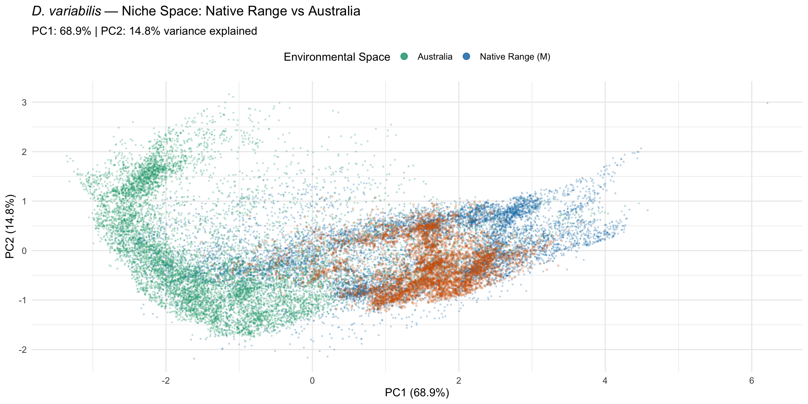
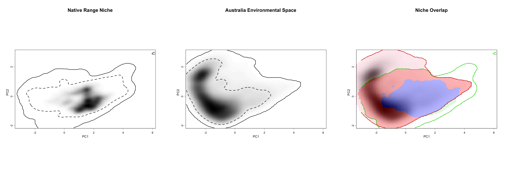

library(tidyverse)
library(terra)
library(ecospat)
library(ade4)
library(sf)
library(rnaturalearth)Step 8: Niche Analysis
Dermacentor variabilis Species Distribution Model
Overview
This script performs niche analysis to directly answer the core research question: Does Australia have the climatic conditions that D. variabilis requires?
We compare the environmental space of the species’ native range (eastern N. America) with the environmental space available in Australia using:
- PCA-based niche comparison — visualise niche overlap in environmental space
- Ecospat niche overlap — Schoener’s D and Warren’s I metrics
- Niche equivalency test — are the niches statistically equivalent?
- Niche similarity test — are the niches more similar than expected by chance?
1. Load data
base_dir <- "~/Library/CloudStorage/OneDrive-CSIRO/OneDrive - Docs/01_Projects/SDM/Dvariabilis_SDM"
processed_dir <- file.path(base_dir, "processed_data")
figures_dir <- file.path(base_dir, "figures")
# Environmental stacks
env_M <- rast(file.path(processed_dir, "env_selected_M.tif"))
env_aus <- rast(file.path(processed_dir, "env_selected_aus.tif"))
# Occurrence data
occ_env <- readRDS(file.path(processed_dir, "occurrences_with_env.rds"))
selected_vars <- readLines(file.path(processed_dir, "selected_variables.txt"))
sprintf("Selected variables: %s", paste(selected_vars, collapse = ", "))[1] "Selected variables: aridity_idx, bio1, bio12, bio15, bio7"2. Sample environmental backgrounds
Sample random points from both extents to characterise the available environmental space in each region.
set.seed(42)
# Sample background from native range (M)
bg_M <- spatSample(env_M, size = 10000, method = "random", na.rm = TRUE,
as.df = TRUE, xy = TRUE)
cat("Native range background samples:", nrow(bg_M), "\n")
# Sample background from Australia
bg_aus <- spatSample(env_aus, size = 10000, method = "random", na.rm = TRUE,
as.df = TRUE, xy = TRUE)
cat("Australia background samples:", nrow(bg_aus), "\n")Native range background samples: 10000
Australia background samples: 10000 3. PCA-based niche comparison
Perform PCA on the combined environmental space, then project both regions and the species’ occurrences onto the PCA axes.
# Combine all environmental data for PCA
all_env <- bind_rows(
bg_M %>% dplyr::select(all_of(selected_vars)) %>% mutate(region = "Native_Range"),
bg_aus %>% dplyr::select(all_of(selected_vars)) %>% mutate(region = "Australia")
)
# Run PCA on environmental variables (excluding region label)
pca_input <- all_env %>% dplyr::select(all_of(selected_vars))
pca_result <- dudi.pca(pca_input, scannf = FALSE, nf = 2)
# Variance explained
var_explained <- round(100 * pca_result$eig / sum(pca_result$eig), 1)
cat("PCA variance explained:\n")
sprintf(" PC1: %.1f%%", var_explained[1])
sprintf(" PC2: %.1f%%", var_explained[2])
sprintf(" Cumulative (PC1+PC2): %.1f%%", sum(var_explained[1:2]))
# Variable loadings
cat("\nVariable loadings:\n")
print(round(pca_result$c1, 3))
# Project occurrence points onto PCA space
occ_pca <- occ_env %>%
dplyr::select(all_of(selected_vars))
occ_scores <- suprow(pca_result, occ_pca)$li
# Get PCA scores for each region
n_M <- nrow(bg_M)
n_aus <- nrow(bg_aus)
scores_M <- pca_result$li[1:n_M, ]
scores_aus <- pca_result$li[(n_M + 1):(n_M + n_aus), ]
# Plot PCA niche space
pca_plot_data <- bind_rows(
scores_M %>% mutate(region = "Native Range (M)"),
scores_aus %>% mutate(region = "Australia"),
occ_scores %>% mutate(region = "D. variabilis occurrences")
)
ggplot() +
# Background environmental space
geom_point(data = pca_plot_data %>% filter(region != "D. variabilis occurrences"),
aes(x = Axis1, y = Axis2, colour = region),
size = 0.3, alpha = 0.2) +
# Species occurrences
geom_point(data = pca_plot_data %>% filter(region == "D. variabilis occurrences"),
aes(x = Axis1, y = Axis2),
colour = "#D55E00", size = 0.6, alpha = 0.2) +
scale_colour_manual(values = c("Native Range (M)" = "#0072B2", "Australia" = "#009E73")) +
labs(
title = expression(italic("D. variabilis") ~ "— Niche Space: Native Range vs Australia"),
subtitle = sprintf("PC1: %.1f%% | PC2: %.1f%% variance explained",
var_explained[1], var_explained[2]),
x = sprintf("PC1 (%.1f%%)", var_explained[1]),
y = sprintf("PC2 (%.1f%%)", var_explained[2]),
colour = "Environmental Space"
) +
theme_minimal(base_size = 12) +
theme(legend.position = "top") +
guides(colour = guide_legend(override.aes = list(size = 3, alpha = 0.8)))
ggsave(
file.path(figures_dir, "08_niche_pca.png"),
width = 6, height = 6, dpi = 300
)PCA variance explained:
[1] " PC1: 68.9%"
[1] " PC2: 14.8%"
[1] " Cumulative (PC1+PC2): 83.7%"
Variable loadings:
CS1 CS2
aridity_idx -0.478 -0.133
bio1 -0.481 0.021
bio12 -0.418 -0.418
bio15 -0.510 -0.120
bio7 -0.325 0.8904. Ecospat niche quantification
Use ecospat to create gridded niche representations and calculate overlap.
# Create ecospat grids
# Species occurrence density in PCA space (native range)
grid_native <- ecospat.grid.clim.dyn(
glob = pca_result$li, # Global PCA space (all backgrounds)
glob1 = scores_M, # Native range background
sp = occ_scores, # Species occurrences
R = 100 # Grid resolution
)
# Australian environmental space (no occurrences — use full background as "available")
grid_aus <- ecospat.grid.clim.dyn(
glob = pca_result$li,
glob1 = scores_aus, # Australia background
sp = scores_aus, # Use all Australia as "potential" space
R = 100
)5. Niche overlap metrics
# Schoener's D and Warren's I
overlap <- ecospat.niche.overlap(grid_native, grid_aus, cor = TRUE)
sprintf("Niche overlap metrics:")
sprintf(" Schoener's D: %.3f", overlap$D)
sprintf(" Warren's I: %.3f", overlap$I)
cat("\nInterpretation:\n")
if (overlap$D > 0.6) {
cat(" High overlap — Australia has substantial climatic similarity to the native range\n")
} else if (overlap$D > 0.3) {
cat(" Moderate overlap — partial climatic similarity; some suitable areas likely exist\n")
} else {
cat(" Low overlap — limited climatic similarity; suitable areas may be restricted\n")
}[1] "Niche overlap metrics:"
[1] " Schoener's D: 0.272"
[1] " Warren's I: 0.490"
Interpretation:
Low overlap — limited climatic similarity; suitable areas may be restricted6. Niche equivalency test
Tests whether the niches of the two regions are statistically equivalent (null: niches are equivalent, randomly drawn from the same pool).
set.seed(42)
equiv_test <- ecospat.niche.equivalency.test(
grid_native, grid_aus,
rep = 1000
)
cat("Niche Equivalency Test:\n")
sprintf(" Observed D: %.3f", equiv_test$obs$D)
sprintf(" P-value (D): %.4f", equiv_test$p.D)
sprintf(" Observed I: %.3f", equiv_test$obs$I)
sprintf(" P-value (I): %.4f", equiv_test$p.I)
if (equiv_test$p.D < 0.05) {
cat(" Result: Niches are NOT equivalent (p < 0.05)\n")
} else {
cat(" Result: Cannot reject niche equivalency (p >= 0.05)\n")
}Niche Equivalency Test:
[1] " Observed D: 0.272"
[1] " P-value (D): 0.0010"
[1] " Observed I: 0.490"
[1] " P-value (I): 0.0010"
Result: Niches are NOT equivalent (p < 0.05)7. Niche similarity test
Tests whether the niches are more similar than expected by chance (a less stringent test than equivalency).
set.seed(42)
# Similarity test: native range -> Australia
sim_test_1 <- ecospat.niche.similarity.test(
grid_native, grid_aus,
rep = 1000,
rand.type = 2 # Randomize within the available environment
)
cat("Niche Similarity Test (Native Range -> Australia):\n")
sprintf(" Observed D: %.3f", sim_test_1$obs$D)
sprintf(" P-value (D): %.4f", sim_test_1$p.D)
if (sim_test_1$p.D < 0.05) {
cat(" Result: Niches are MORE similar than expected by chance (p < 0.05)\n")
cat(" Interpretation: Australia has climate conditions that are significantly\n")
cat(" similar to the native range of D. variabilis\n")
} else {
cat(" Result: Cannot conclude niches are more similar than random (p >= 0.05)\n")
}
# Similarity test: Australia -> Native range
sim_test_2 <- ecospat.niche.similarity.test(
grid_aus, grid_native,
rep = 1000,
rand.type = 2
)
cat("\nNiche Similarity Test (Australia -> Native Range):\n")
sprintf(" Observed D: %.3f", sim_test_2$obs$D)
sprintf(" P-value (D): %.4f", sim_test_2$p.D)Niche Similarity Test (Native Range -> Australia):
[1] " Observed D: 0.272"
[1] " P-value (D): 0.1768"
Result: Cannot conclude niches are more similar than random (p >= 0.05)
Niche Similarity Test (Australia -> Native Range):
[1] " Observed D: 0.272"
[1] " P-value (D): 0.1069"8. Ecospat niche plots
png(file.path(figures_dir, "08_ecospat_niche_plots.png"),
width = 14, height = 5, units = "in", res = 300)
par(mfrow = c(1, 3))
# Native range niche
ecospat.plot.niche(grid_native, title = "Native Range Niche",
name.axis1 = "PC1", name.axis2 = "PC2")
# Australia environmental space
ecospat.plot.niche(grid_aus, title = "Australia Environmental Space",
name.axis1 = "PC1", name.axis2 = "PC2")
# Niche overlap
ecospat.plot.niche.dyn(grid_native, grid_aus,
quant = 0.25,
interest = 2, # Show Australia's perspective
title = "Niche Overlap",
name.axis1 = "PC1", name.axis2 = "PC2")
dev.off()
# Display inline
par(mfrow = c(1, 3))
ecospat.plot.niche(grid_native, title = "Native Range Niche",
name.axis1 = "PC1", name.axis2 = "PC2")
ecospat.plot.niche(grid_aus, title = "Australia Environmental Space",
name.axis1 = "PC1", name.axis2 = "PC2")
ecospat.plot.niche.dyn(grid_native, grid_aus,
quant = 0.25, interest = 2,
title = "Niche Overlap",
name.axis1 = "PC1", name.axis2 = "PC2")
quartz_off_screen
2 9. Summary and interpretation
cat("======================================================\n")
cat(" NICHE ANALYSIS SUMMARY\n")
cat(" Does Australia have suitable climate for D. variabilis?\n")
cat("======================================================\n\n")
sprintf("Schoener's D: %.3f", overlap$D)
sprintf("Warren's I: %.3f", overlap$I)
sprintf("Equivalency test p-value: %.4f", equiv_test$p.D)
sprintf("Similarity test p-value (Native -> Aus): %.4f", sim_test_1$p.D)
sprintf("Similarity test p-value (Aus -> Native): %.4f", sim_test_2$p.D)
cat("\n--- Key Findings ---\n")
# Summarise findings
area_summary <- read_csv(file.path(processed_dir, "suitable_area_summary.csv"),
show_col_types = FALSE)
cat("\nPredicted suitable area in Australia:\n")
print(area_summary, n = Inf)
cat("\n--- Conclusion ---\n")
cat("The niche analysis and model projections together indicate whether\n")
cat("Australia has the climatic conditions required for D. variabilis.\n")
cat("Areas of analogous climate (MESS >= 0) with high predicted suitability\n")
cat("represent the most reliable assessment of potential establishment risk.\n")======================================================
NICHE ANALYSIS SUMMARY
Does Australia have suitable climate for D. variabilis?
======================================================
[1] "Schoener's D: 0.272"
[1] "Warren's I: 0.490"
[1] "Equivalency test p-value: 0.0010"
[1] "Similarity test p-value (Native -> Aus): 0.1768"
[1] "Similarity test p-value (Aus -> Native): 0.1069"
--- Key Findings ---
Predicted suitable area in Australia:
# A tibble: 8 × 3
model suitable_area_km2 pct_australia
<chr> <dbl> <dbl>
1 MaxEnt (correlative) 217704 2.8
2 MaxEnt (MESS-masked) 217704 2.8
3 BRT (correlative) 223710 2.9
4 BRT (MESS-masked) 223614 2.9
5 CLIMEX (EI > 10, process-based) 243962 3.2
6 Ensemble ≥1 model 1994660 25.8
7 Ensemble ≥2 models (recommended) 244105 3.2
8 Ensemble = 3 models (conservative) 189133 2.4
--- Conclusion ---
The niche analysis and model projections together indicate whether
Australia has the climatic conditions required for D. variabilis.
Areas of analogous climate (MESS >= 0) with high predicted suitability
represent the most reliable assessment of potential establishment risk.10. Save outputs
# Save niche analysis results
niche_results <- list(
overlap = overlap,
equivalency = list(
obs_D = equiv_test$obs$D,
p_D = equiv_test$p.D,
obs_I = equiv_test$obs$I,
p_I = equiv_test$p.I
),
similarity_native_to_aus = list(
obs_D = sim_test_1$obs$D,
p_D = sim_test_1$p.D
),
similarity_aus_to_native = list(
obs_D = sim_test_2$obs$D,
p_D = sim_test_2$p.D
),
pca_variance = var_explained[1:2]
)
saveRDS(niche_results, file.path(processed_dir, "niche_analysis_results.rds"))
# PCA results
saveRDS(pca_result, file.path(processed_dir, "pca_result.rds"))
# Niche results summary CSV
niche_summary <- tibble(
metric = c("Schoener's D", "Warren's I",
"Equivalency p-value", "Similarity p-value (Native->Aus)",
"Similarity p-value (Aus->Native)"),
value = c(overlap$D, overlap$I,
equiv_test$p.D, sim_test_1$p.D, sim_test_2$p.D)
)
write_csv(niche_summary, file.path(processed_dir, "niche_overlap_summary.csv"))
sprintf("Saved niche analysis results to processed_data/")[1] "Saved niche analysis results to processed_data/"